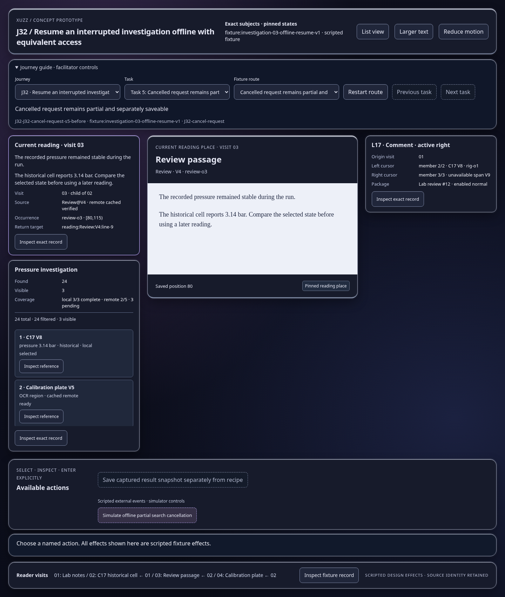
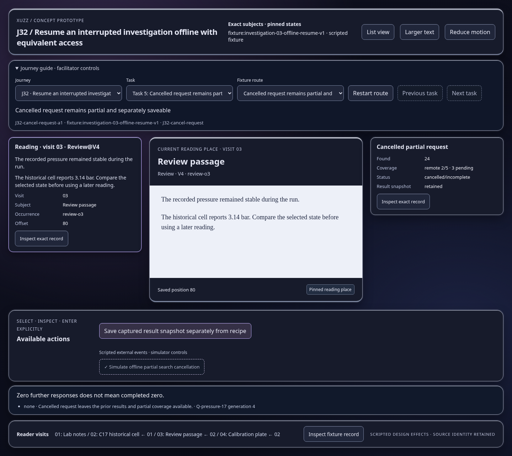
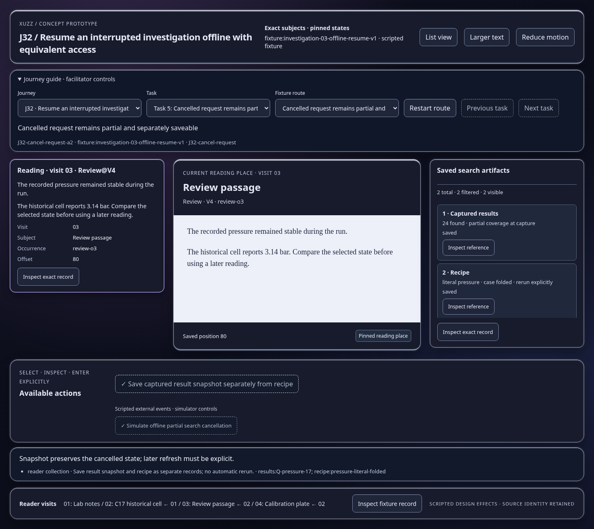

Scripted concept states; inspect the effect and identity trace. Images show actual prototype rendering.

Zero further responses does not mean completed zero.
Open this represented state
Snapshot preserves the cancelled state; later refresh must be explicit.
Open this represented state